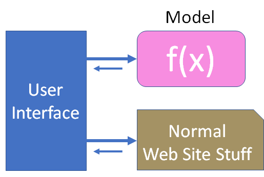
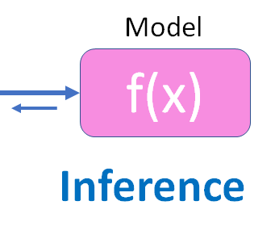
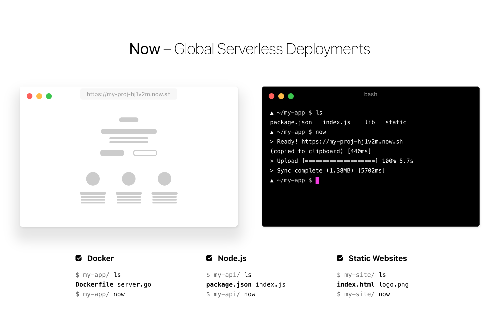
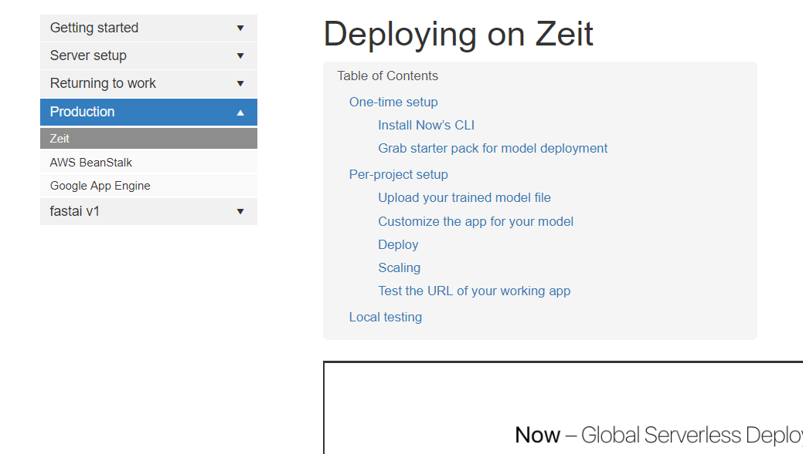
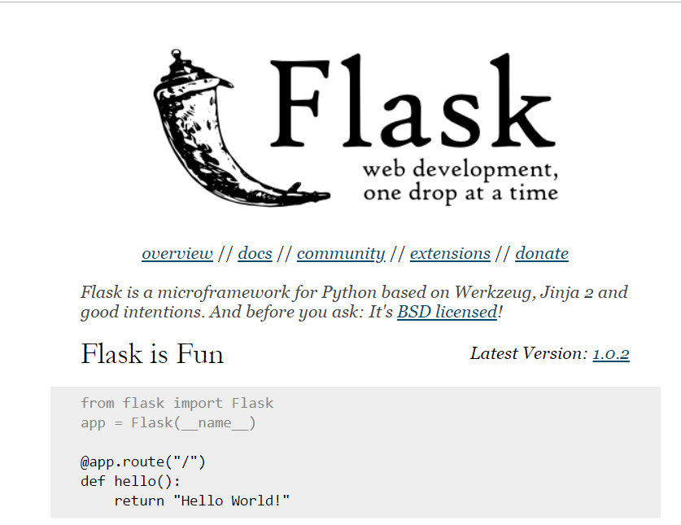
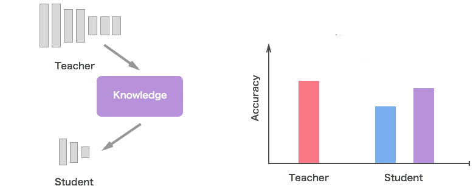

<!doctype html>
<html lang="en">
    <head>
        <meta charset="utf-8">
        <meta name="viewport" content="width=device-width, initial-scale=1.0, maximum-scale=1.0, user-scalable=no">

        <title>Deploying Deep Learning</title>
        <link rel="stylesheet" href="./css/reveal.css">
        <link rel="stylesheet" href="./css/theme/moon.css" id="theme">
        <link rel="stylesheet" href="./css/highlight/zenburn.css">
        <link rel="stylesheet" href="./css/print/paper.css" type="text/css" media="print">


    </head>
    <body>

        <div class="reveal">
            <div class="slides"><section  data-markdown><script type="text/template">
## Intro

Scott Mueller

smueller.tampa.ai@gmail.com

MomsSafetyNet.com</script></section><section  data-markdown><script type="text/template">## Tampa.ai

Looking for Presenters
</script></section><section  data-markdown><script type="text/template"># Deploying Deep Learning Models</script></section><section  data-markdown><script type="text/template">* "Brilliant" Deep Learning Idea
* Built initial Model
> Minimum Viable Product
* What could go wrong
* Deployment Alternatives
* Choices
* Example Project
</script></section><section  data-markdown><script type="text/template">## We'll Focus on smaller scale project

* Websites
* Low-volume Services

> Higher-scale --> Resources to solve that challenge</script></section><section  data-markdown><script type="text/template">## Normal Father-Son Activities

</script></section><section  data-markdown><script type="text/template">## Data Science Father-Son
</script></section><section  data-markdown><script type="text/template">## Fast.ai v3
</script></section><section  data-markdown><script type="text/template">## Good Friends
</script></section><section  data-markdown><script type="text/template">## Fast.ai Lessons

*
[What was important about Fast.ai for Zach]</script></section><section  data-markdown><script type="text/template">## Is it Venemous?

</script></section><section  data-markdown><script type="text/template">## Gathering Data
[Image Download snippet]</script></section><section  data-markdown><script type="text/template">## Clean up Data
[Something related to cleaning up date]</script></section><section  data-markdown><script type="text/template">## CollabNet
[Picture of Notebook]</script></section><section  data-markdown><script type="text/template">## Incorrectly Classified
[Picture of Incorrect Matrix]</script></section><section  data-markdown><script type="text/template">## Good Accuracy
[Picture of accuracy]</script></section><section  data-markdown><script type="text/template">## Let's Build a Website
</script></section><section  data-markdown><script type="text/template">## What could go wrong?

* Misidentification
* Linked to Bank Account
* Obtain some business value
* Security of application</script></section><section  data-markdown><script type="text/template">## Model is just a function


> Inputs, Processing, Result</script></section><section  data-markdown><script type="text/template">## Inference
</script></section><section  data-markdown><script type="text/template">## Example Inference Code

```python
pred_class,pred_idx,outputs = learn.predict(img)
pred_class
```

```python
'black'
```</script></section><section  data-markdown><script type="text/template">## Architectures for Function Calls

* Remote Procedure Calls
* SOAP requests
* JSON Service
* Web Socket Communication
* Serverless</script></section><section  data-markdown><script type="text/template">## Why Distributed?

* Deep Neural Nets use lots of Memory
* Lots of simple math function calls
* Slows down your web server when scaling model calls</script></section><section  data-markdown><script type="text/template">## To GPU or not to GPU?

* Latency impact on business
* Sustained concurrent usage
</script></section><section  data-markdown><script type="text/template">## Remote Function Calls</script></section><section  data-markdown><script type="text/template">## Serverless



https://zeit.co/</script></section><section  data-markdown><script type="text/template"></script></section><section  data-markdown><script type="text/template">## Flask Server

* Simple Python Server



http://flask.pocoo.org/]</script></section><section  data-markdown><script type="text/template">Productionizing Flask


https://vsupalov.com/flask-web-server-in-production/
</script></section><section  data-markdown><script type="text/template">## Remote communication via JSON

* Security
* Denial of Service Attack Robustness
* Direct Service Access by 3rd Party </script></section><section  data-markdown><script type="text/template">## Distributed Procedure Call
```elixir
  @doc """
  Call python function using MFA format
  """
  def call_python(pid, module, function, arguments \\ []) do
    pid
    |>:python.call(module, function, arguments)

  end
```</script></section><section  data-markdown><script type="text/template">## Example Applications

https://github.com/nikhilno1/healthy-or-not/blob/master/heroku-deploy.md

https://github.com/dzlab/deepprojects/tree/master/emotion-classifier

https://hackernoon.com/anothernothotdog-280ee5b86fb3

https://github.com/keyurparalkar/ASL-live-predictor
</script></section><section  data-markdown><script type="text/template">
https://medium.com/@lankinen/fastai-model-to-production-this-is-how-you-make-web-app-that-use-your-model-57d8999450cf

https://github.com/etown/dl1/blob/master/face/README.md

https://github.com/EdwardJRoss/whatcar

https://medium.com/datadriveninvestor/building-a-cold-or-canker-sores-classifier-app-using-deep-learning-242b8c80fbe5

https://github.com/tamlyn/treeid

</script></section><section  data-markdown><script type="text/template">## Optimization

* Latency vs Accuracy
* Cost vs Accuracy at medium scale</script></section><section  data-markdown><script type="text/template">## Distillation

- Train accurate, complex model

- Train a simpler model from complex model</script></section><section  data-markdown><script type="text/template">

https://medium.com/neural-machines/knowledge-distillation-dc241d7c2322
</script></section><section  data-markdown><script type="text/template">Questions?</script></section><section  data-markdown><script type="text/template">[MomsSafetyNet.com](https://www.momssafetynet.com/team.html)

Looking for Founder Engineers

Elixir, Functional Programming, Rails, Experience

Web presentation skills</script></section></div>
        </div>

        <script src="./lib/js/head.min.js"></script>
        <script src="./js/reveal.js"></script>

        <script>
            function extend() {
              var target = {};
              for (var i = 0; i < arguments.length; i++) {
                var source = arguments[i];
                for (var key in source) {
                  if (source.hasOwnProperty(key)) {
                    target[key] = source[key];
                  }
                }
              }
              return target;
            }

            // Optional libraries used to extend on reveal.js
            var deps = [
              { src: './lib/js/classList.js', condition: function() { return !document.body.classList; } },
              { src: './plugin/markdown/marked.js', condition: function() { return !!document.querySelector('[data-markdown]'); } },
              { src: './plugin/markdown/markdown.js', condition: function() { return !!document.querySelector('[data-markdown]'); } },
              { src: './plugin/highlight/highlight.js', async: true, callback: function() { hljs.initHighlightingOnLoad(); } },
              { src: './plugin/zoom-js/zoom.js', async: true },
              { src: './plugin/notes/notes.js', async: true },
              { src: './plugin/math/math.js', async: true }
            ];

            // default options to init reveal.js
            var defaultOptions = {
              controls: true,
              progress: true,
              history: true,
              center: true,
              transition: 'default', // none/fade/slide/convex/concave/zoom
              dependencies: deps
            };

            // options from URL query string
            var queryOptions = Reveal.getQueryHash() || {};

            var options = {"transition":"fade"};
            options = extend(defaultOptions, options, queryOptions);
        </script>


        <script>
          Reveal.initialize(options);
        </script>
    </body>
</html>
